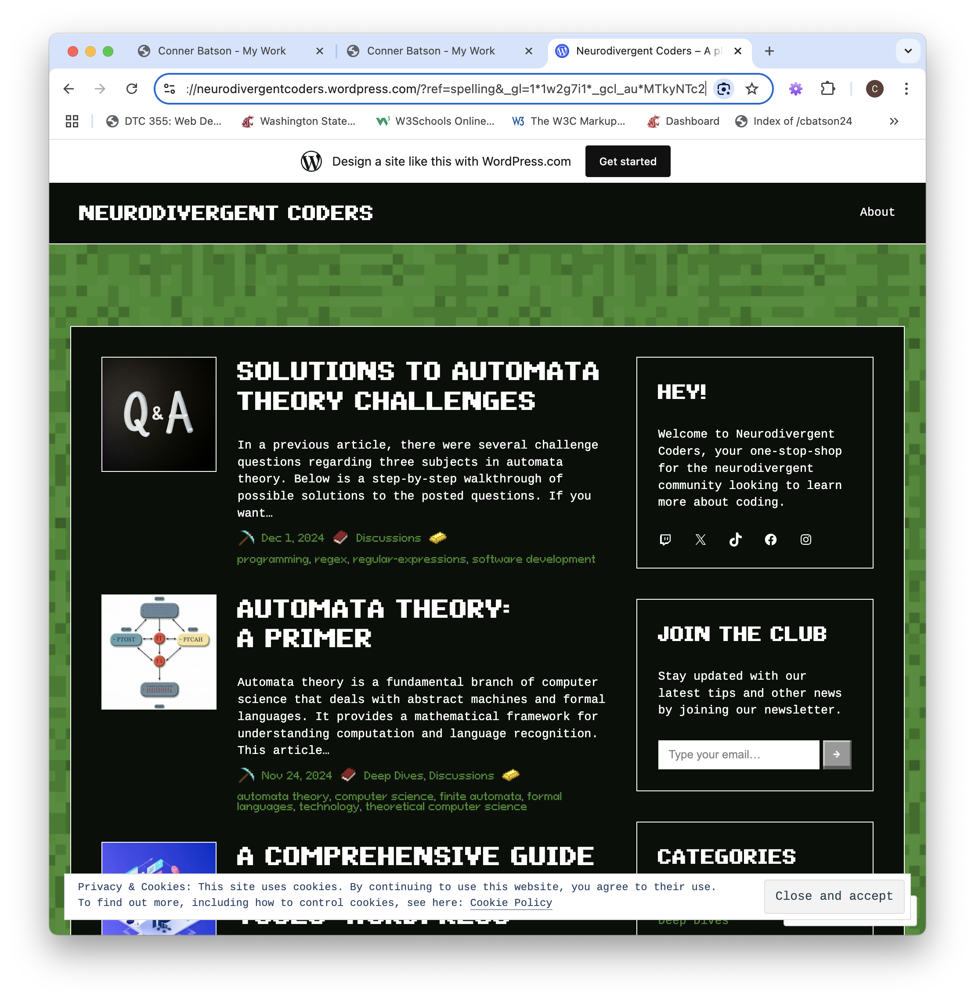

Neurodivergent Coders
A coding blog from a neurodiverse perspective.
Overview
Started in April 2024 as a weekly demonstration of knowledge, this blog covers a variety of subjects about computer science. Written under the pseudonym "Mr. Neurodivergent", it covers subjects such as ai, cascading style sheets, databases, programming concepts, programing tools, and web development. This is an ongoing project with the intent of continuing weekly posts every weekend for a minimum of one year.
Technical Details
- Tools: Wordpress
Screenshots
Go to the Source
Link to the wordpress blog.
View Site